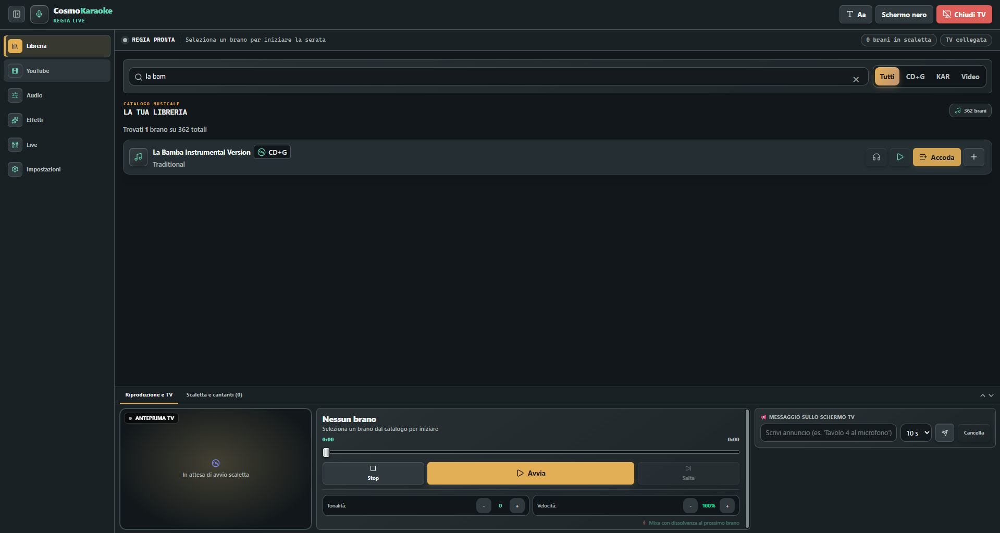
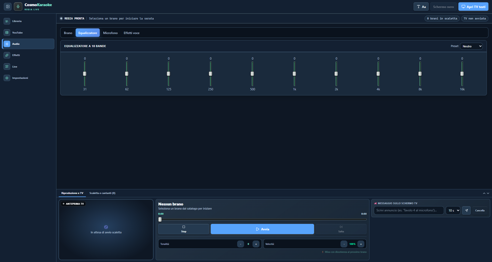
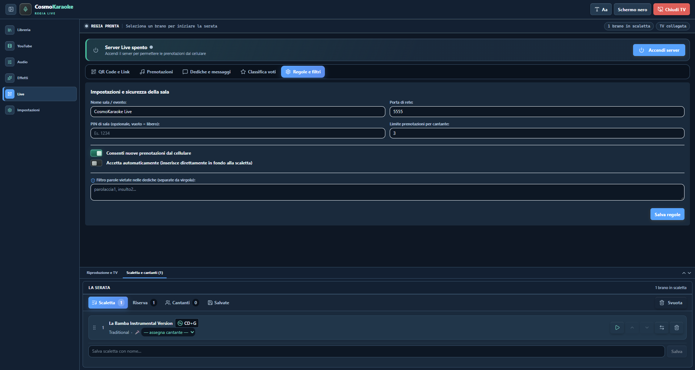
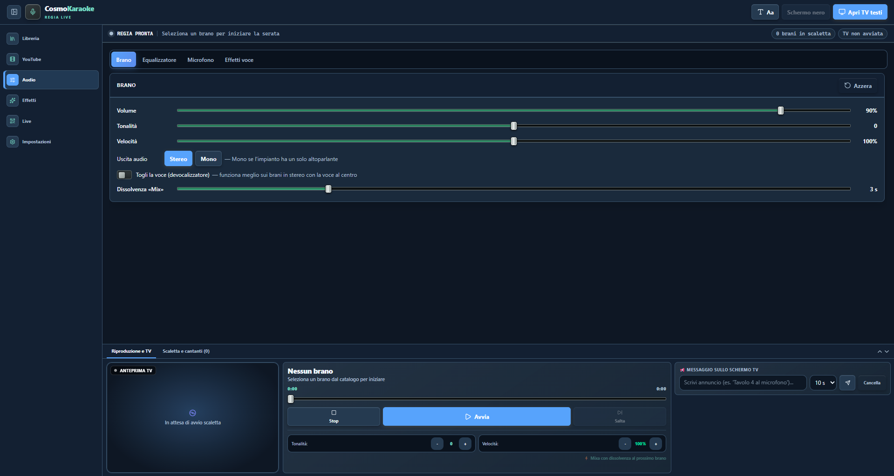

01 / LIBRERIA
Il tuo catalogo, finalmente ordinato
Cerca per titolo o artista e filtra per CD+G, KAR o video. La libreria legge anche MIDI, audio e altri formati supportati dal computer.
Come preparare la libreria ↗ CosmoKaraokedi CosmoNet
CosmoKaraokedi CosmoNet
LA TUA SERATA, SOTTO CONTROLLO
Cerca un brano, componi la scaletta, gestisci audio e schermo TV. CosmoKaraoke mette gli strumenti della serata nello stesso posto, senza farti perdere il filo.
Piacere, Cosmo.La serata la regiamo insieme.
PROGETTATO PER LA REGIA
La navigazione resta a portata di mano. Player, anteprima TV e scaletta possono stare nel pannello inferiore, così i controlli importanti rimangono visibili mentre prepari la prossima canzone.
Cerca per titolo o artista e filtra per CD+G, KAR o video. La libreria legge anche MIDI, audio e altri formati supportati dal computer.
Come preparare la libreria ↗Metti in ordine i brani, prepara una riserva, assegna i cantanti e salva le scalette che usi più spesso. Lo storico locale aiuta a riprendere i brani già eseguiti.
Volume, tonalità, velocità, stereo/mono e riduzione della voce. Un equalizzatore a dieci bande con preset regolabili completa i controlli.
Esplora i controlli audio ↗
Avvia il server sulla rete locale e condividi il QR o il link per ricevere richieste, prenotazioni, dediche e voti. Nome sala, porta, PIN e regole si configurano dall'app.
Configura Live passo per passo ↗
Scegli tra temi con palette e layout diversi: Standard per l'uso quotidiano, Casa per un'atmosfera più calda, Professionale e Premium per la regia con pannello inferiore. Regola anche dimensione e leggibilità.
Scegliere tema e layout ↗Apri la finestra testi su un secondo monitor, regola aspetto e dimensione, oscura temporaneamente lo schermo o invia un annuncio alla sala.
Collegare il televisore ↗CURA DEL DETTAGLIO
Parti da un preset dell'equalizzatore e poi affina ogni banda. Puoi anche collegare un microfono, scegliere effetti vocali e impostare un'uscita cuffie per ascoltare le anteprime.
Vai alla sezione audio
CHIARO FIN DALL'INIZIO
CosmoKaraoke non include un catalogo musicale e non richiede un account. La funzione Live opera sulla rete locale; YouTube è facoltativo e richiede una connessione. Il progetto è attualmente destinato all'uso personale.
COSMOKARAOKE 0.4.5
Scarica la versione disponibile oppure consulta la guida prima di iniziare.